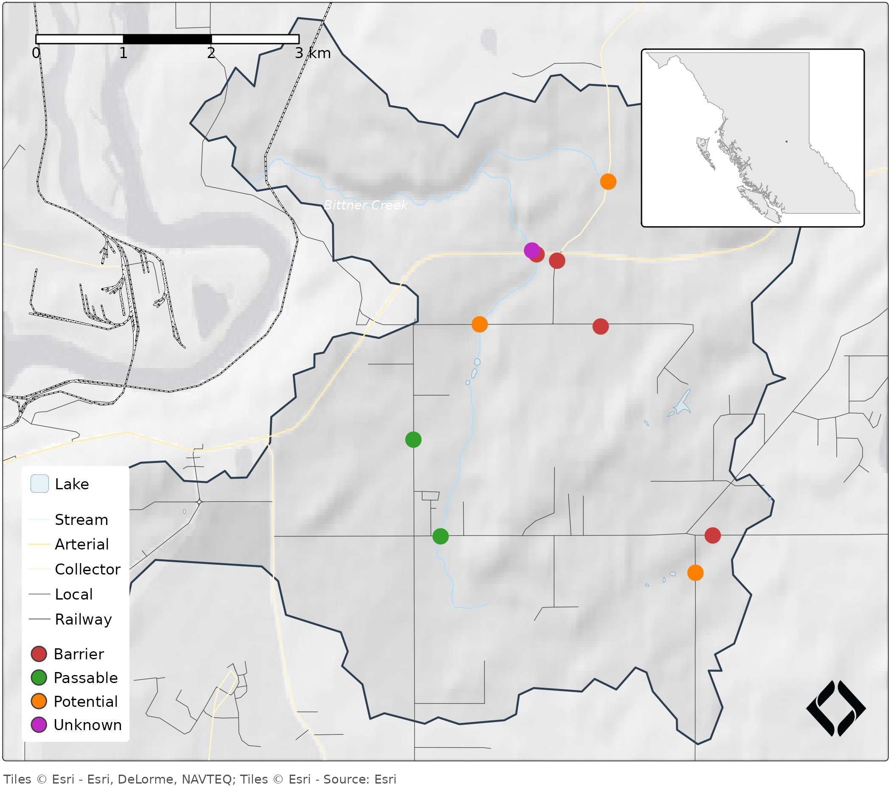

gq keeps map styles in one registry and translates them for each place a map is drawn: tmap for static report figures, MapLibre GL (through mapgl) for web maps, and QGIS’s own style files for field and desktop projects. Change a colour in the registry and every map that reads it follows.
One registry
The registry is a JSON file mapping a layer name to
rendering properties: fill, stroke, opacity, symbol, label and
classification. Most entries are extracted from New Graph’s QGIS project
templates with gq_qgs_extract(); the rest are curated by
hand. gq_reg_main() loads the merged registry that ships
with the package:
library(gq)
reg <- gq_reg_main()
length(reg$layers)
#> [1] 63
# Backend-agnostic style for one layer, by name
gq_style(reg, "lake")
#> $type
#> [1] "polygon"
#>
#> $fill
#> $fill$color
#> [1] "#dcecf4"
#>
#> $fill$opacity
#> [1] 0.7
#>
#>
#> $stroke
#> $stroke$color
#> [1] "#1f78b4"
#>
#> $stroke$width
#> [1] 0.2Real data: Bittner Creek
gq ships real data for Bittner Creek near Prince George, a ~40 km² watershed: the boundary, streams and lakes from the BC Freshwater Atlas, roads from the Digital Road Atlas, and railway and PSCIS fish passage assessments from the BC Data Catalogue.
library(sf)
#> Linking to GEOS 3.12.1, GDAL 3.8.4, PROJ 9.4.0; sf_use_s2() is TRUE
sf_use_s2(FALSE)
#> Spherical geometry (s2) switched off
data(bittner_wsd, bittner_streams, bittner_lakes,
bittner_roads, bittner_railway, bittner_pscis, neexdzii_bc,
package = "gq")
# The assessments are bundled for the watershed's bounding box widened by
# 2 km, so some fall outside the watershed. The map is about Bittner Creek, so it shows the ones inside
# rather than framing the watershed while symbols sit beyond it (gq#62).
pscis_aoi <- bittner_pscis[lengths(st_intersects(bittner_pscis, bittner_wsd)) > 0, ]
#> although coordinates are longitude/latitude, st_intersects assumes that they
#> are planar
#> although coordinates are longitude/latitude, st_intersects assumes that they
#> are planar
cat("Watershed:", round(bittner_wsd$area_ha), "ha\n")
#> Watershed: 4008 ha
cat("PSCIS crossings:", nrow(bittner_pscis), "bundled,", nrow(pscis_aoi),
"inside the watershed\n")
#> PSCIS crossings: 23 bundled, 10 inside the watershedtmap: a static map for reports
gq_tmap_style(reg, "name") returns tmap arguments for a
layer, so a layer is drawn with do.call(). Classified
layers come with their categorical scale, and field names
the column when the data calls it something other than the registry
does.
library(tmap)
#> Registered S3 method overwritten by 'stars':
#> method from
#> st_interpolate_aw.stars sf
# Pad the watershed's bbox to the canvas aspect so the map fills the page.
bbox <- gq_bbox_aspect(bittner_wsd, asp = 7 / 6)
canvas <- gq_basemap_tiles(bbox, provider = "Esri.WorldGrayCanvas",
zoom = 12, pad = 0, crs = NULL)
relief <- gq_basemap_tiles(bbox, provider = "Esri.WorldShadedRelief",
zoom = 12, pad = 0, crs = NULL)
# gq_basemap_tiles() returns NULL when a fetch fails, so build the whole layer
# conditionally: tm_shape() rejects NULL. The tile credit travels with the
# raster as an attribute; no tiles drawn, no credit owed.
credit <- NULL
basemap <- if (is.null(canvas) || is.null(relief)) {
NULL
} else {
blended <- gq_basemap_blend(canvas, relief, method = "gamma", gamma = 0.5)
credit <- attr(blended, "credit")
tm_shape(blended) + tm_rgb()
}
# Keep only what reaches the frame. gq_bbox_clip() returns NULL rather than an
# empty layer, which tm_shape() would reject.
roads <- gq_bbox_clip(bittner_roads, bbox)
#> although coordinates are longitude/latitude, st_intersects assumes that they
#> are planar
railway <- gq_bbox_clip(bittner_railway, bbox)
#> although coordinates are longitude/latitude, st_intersects assumes that they
#> are planar
streams <- gq_bbox_clip(bittner_streams[bittner_streams$stream_order >= 3, ], bbox)
#> although coordinates are longitude/latitude, st_intersects assumes that they
#> are planar
# One label per named stream, from order 4 up
named <- bittner_streams[!is.na(bittner_streams$gnis_name) &
bittner_streams$stream_order >= 4, ]
stream_labels <- do.call(rbind, lapply(split(named, named$gnis_name), function(x) {
st_sf(gnis_name = x$gnis_name[1],
geometry = st_point_on_surface(st_union(x)), crs = st_crs(x))
}))
#> although coordinates are longitude/latitude, st_union assumes that they are
#> planar
#> Warning in st_point_on_surface.sfc(st_union(x)): st_point_on_surface may not
#> give correct results for longitude/latitude data
stream_sty <- gq_style(reg, "streams_all")
railway_sty <- gq_style(reg, "railway")
label_sty <- gq_style(reg, "stream_labels")$label
# The stream class every bundled segment is drawn as: the data carries no
# feature code, so one class stands for them all, and the legend says so.
stream_key <- names(stream_sty$classification$values)[[1]]
# Knock back everything outside the watershed so the subject reads at a glance.
bb_box <- st_as_sfc(bbox, crs = st_crs(bittner_wsd))
aoi_mask <- st_difference(bb_box, st_geometry(bittner_wsd))
#> although coordinates are longitude/latitude, st_difference assumes that they
#> are planar
m <- basemap +
tm_shape(bb_box) +
tm_borders(lwd = 0, col = NA) +
tm_shape(aoi_mask) +
tm_polygons(fill = "white", fill_alpha = 0.45, col = NA, lwd = 0) +
tm_shape(bittner_wsd) +
tm_polygons(fill_alpha = 0, col = "#2c3e50", lwd = 1.5)
if (!is.null(streams)) {
m <- m + tm_shape(streams) +
tm_lines(col = stream_sty$classification$values[[stream_key]],
lwd = stream_sty$classification$widths[[stream_key]] * 3)
}
m <- m +
tm_shape(bittner_lakes) +
do.call(tm_polygons, gq_tmap_style(reg, "lake"))
if (!is.null(roads)) {
m <- m + tm_shape(roads) +
do.call(tm_lines, gq_tmap_style(reg, "roads_dra", field = "road_type"))
}
# Railway: the registry carries the black line; the white dashed overlay QGIS
# draws on it is a second symbol layer the registry does not model yet.
if (!is.null(railway)) {
m <- m + tm_shape(railway) +
tm_lines(col = railway_sty$stroke$color,
lwd = railway_sty$stroke$width * 3) +
tm_shape(railway) +
tm_lines(col = "white", lwd = railway_sty$stroke$width * 1.5, lty = "42")
}
m <- m +
tm_shape(pscis_aoi) +
do.call(tm_dots, gq_tmap_style(reg, "crossings_pscis_assessment")) +
tm_shape(stream_labels) +
tm_text("gnis_name", size = 0.6, col = label_sty$color, fontface = "italic",
options = opt_tm_text(shadow = TRUE, remove_overlap = TRUE))
# The legend is built from the registry, cut to the classes the frame shows.
leg <- gq_tmap_legend(
reg,
c("Lake" = "lake", "Stream" = "streams_all", "roads_dra",
"Railway" = "railway", "crossings_pscis_assessment"),
present = list(
streams_all = stream_key,
roads_dra = if (is.null(roads)) character(0) else unique(roads$road_type),
crossings_pscis_assessment = unique(pscis_aoi$barrier_result_code)
)
)
m <- Reduce(`+`, c(list(m), lapply(leg, function(x) do.call(tm_add_legend, x))))
# Four corners, one element each: legend bottom-left, scale bar top-left,
# keymap top-right, logo bottom-right. The keymap took the bottom-right corner
# first and covered two crossings on the watershed's south-east edge; the
# north-east is empty ground, and the small logo fits beyond the boundary.
m <- m +
tm_scalebar(
breaks = gq_scale_breaks(st_bbox(st_transform(bb_box, 3005))),
text.size = 0.7, position = c("left", "top"), margins = c(0, 0, 0, 0)
) +
tm_logo(system.file("logo", "nge_icon_200.png", package = "gq"),
position = c("right", "bottom"), height = 2.5, margins = c(0, 0, 0, 0)) +
tm_layout(
frame = TRUE, frame.lwd = 0.5, asp = 0,
legend.position = c("left", "bottom"),
legend.frame = TRUE, legend.bg.color = "white", legend.bg.alpha = 0.85,
# Sized for the ~700 px column the figure is published in, not for the
# 7 in render.
legend.text.size = 0.7, legend.title.size = 0.8,
inner.margins = rep(0.001, 4), outer.margins = rep(0.003, 4),
meta.margins = 0
)
# The tile credit goes below the frame, since the four corners are taken. The
# map prints into a viewport above a fixed strip, so it keeps its 7:6 canvas
# (the figure is 6.25 in tall for that) and the keymap nests inside it.
strip <- grid::unit(0.25, "inches")
map_vp <- grid::viewport(y = 1, just = "top",
height = grid::unit(1, "npc") - strip)
print(m, vp = map_vp)
if (!is.null(credit)) {
grid::grid.text(credit, x = grid::unit(0.004, "npc"), y = strip * 0.5,
just = "left", gp = grid::gpar(fontsize = 7, col = "grey30"))
}
km <- gq_tmap_keymap(bittner_wsd, neexdzii_bc, reg = reg, asp = 7 / 6,
corner = "topright")
grid::pushViewport(map_vp)
print(km$map, vp = km$viewport)
grid::popViewport()
PSCIS fish passage assessments in the Bittner Creek watershed, classified by barrier status. The crossings, roads and lakes are drawn straight from the gq registry, and the streams and railway take their colours from it.
The crossings, roads and lakes on that map are drawn straight from the registry, and the streams and railway take their colours from it, so they match the QGIS project the field crews use: red for a barrier, green for passable, orange for a potential barrier and purple for unknown are the values QGIS draws. The watershed outline, the shading outside it and the railway’s white dashes are set by hand, because the registry has no entry for the first two and does not model the dashes yet.
How the translation works
gq_tmap_style() turns registry properties into tmap’s
argument names:
gq_tmap_style(reg, "lake")
#> $fill
#> [1] "#dcecf4"
#>
#> $fill_alpha
#> [1] 0.7
#>
#> $col
#> [1] "#1f78b4"
#>
#> $lwd
#> [1] 0.2
gq_tmap_style(reg, "railway")
#> $col
#> [1] "#000000"
#>
#> $lwd
#> [1] 0.4For a classified layer, gq_tmap_classes() returns the
field, the colour for each class and its label, ready for
tm_scale_categorical():
gq_tmap_classes(reg, "crossings_pscis_assessment")
#> $field
#> [1] "barrier_result_code"
#>
#> $values
#> BARRIER PASSABLE POTENTIAL UNKNOWN
#> "#ca3c3c" "#33a02c" "#ff7f00" "#bf2ac4"
#>
#> $labels
#> BARRIER PASSABLE POTENTIAL UNKNOWN
#> "Barrier" "Passable" "Potential" "Unknown"
#>
#> $widths
#> NULL
#>
#> $dashes
#> NULL
#>
#> $opacities
#> NULLMapLibre GL: an interactive web map
The same registry produces MapLibre GL paint properties through
gq_mapgl_style(), and a match expression for a
classified layer through gq_mapgl_classes(). Both take a
layer entry:
library(mapgl)
lake_gl <- gq_mapgl_style(reg$layers$lake)
railway_gl <- gq_mapgl_style(reg$layers$railway)
pscis_gl <- gq_mapgl_classes(reg$layers$crossings_pscis_assessment)
maplibre(bounds = as.numeric(st_bbox(bittner_wsd))) |>
add_line_layer(
id = "watershed", source = bittner_wsd,
line_color = "#2c3e50", line_width = 1.5
) |>
add_fill_layer(
id = "lakes", source = bittner_lakes,
fill_color = lake_gl$paint[["fill-color"]],
fill_opacity = lake_gl$paint[["fill-opacity"]]
) |>
add_line_layer(
id = "streams", source = streams,
line_color = stream_sty$classification$values[[stream_key]],
line_width = 1
) |>
add_line_layer(
id = "railway", source = railway,
line_color = railway_gl$paint[["line-color"]],
line_width = 1.5
) |>
add_circle_layer(
id = "pscis", source = pscis_aoi,
circle_color = pscis_gl, circle_radius = 6,
circle_stroke_color = "white", circle_stroke_width = 1
)The same registry styles drawn as an interactive MapLibre GL map.
The crossings are coloured by a MapLibre match
expression built from the registry, the same classification tmap
drew:
str(pscis_gl)
#> List of 11
#> $ : chr "match"
#> $ :List of 2
#> ..$ : chr "get"
#> ..$ : chr "barrier_result_code"
#> $ : chr "BARRIER"
#> $ : chr "#ca3c3c"
#> $ : chr "PASSABLE"
#> $ : chr "#33a02c"
#> $ : chr "POTENTIAL"
#> $ : chr "#ff7f00"
#> $ : chr "UNKNOWN"
#> $ : chr "#bf2ac4"
#> $ : chr "#888888"Extract from QGIS
gq_qgs_extract() reads a QGIS project’s XML and builds a
registry from its layer styles, with no QGIS installation needed:
qgs_path <- system.file("examples", "mini_project.qgs", package = "gq")
extracted <- gq_qgs_extract(qgs_path)
names(extracted$layers)
#> [1] "lakes" "streams" "crossings" "roads"Write it out as a registry of your own, and merge it over the shipped
one with gq_reg_merge():
jsonlite::write_json(extracted, "registry.json", pretty = TRUE, auto_unbox = TRUE)
reg <- gq_reg_merge(gq_reg_main(), gq_reg_read("registry.json"))For QGIS itself, the registry is not the route: it models the
properties tmap and MapLibre can draw. gq_style_qml()
returns the path to the QML style QGIS authored, with everything
intact.